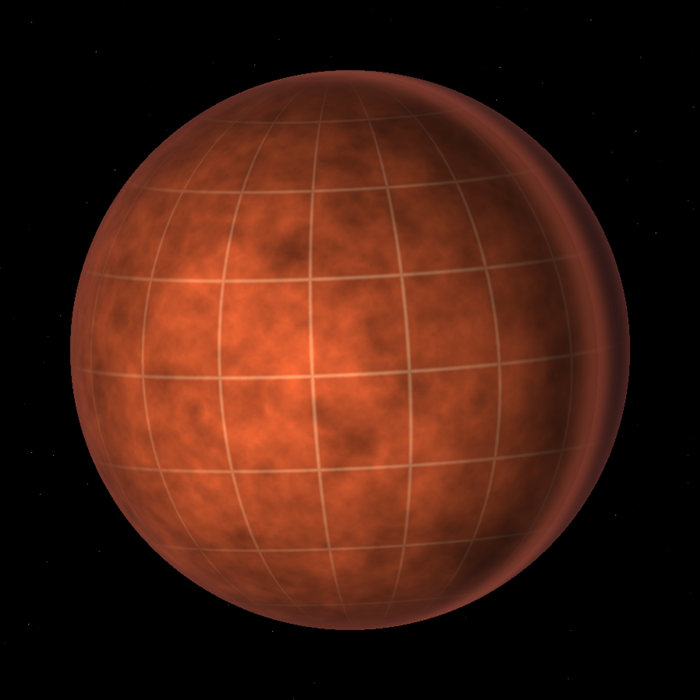

Four findings, one bench. Cooled and set close together they fall into step; warm, or far apart, each keeps its own time. These are the bench's settings, not this finding's: change them here and every artefact present sees the change. Off, each finding is exactly what it was.
